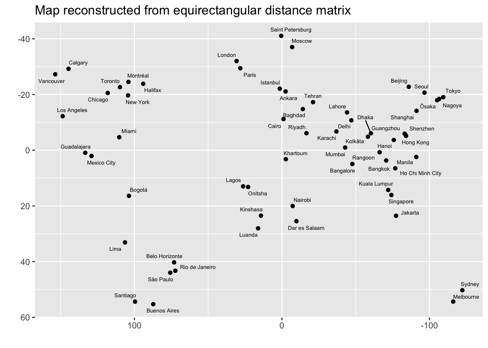
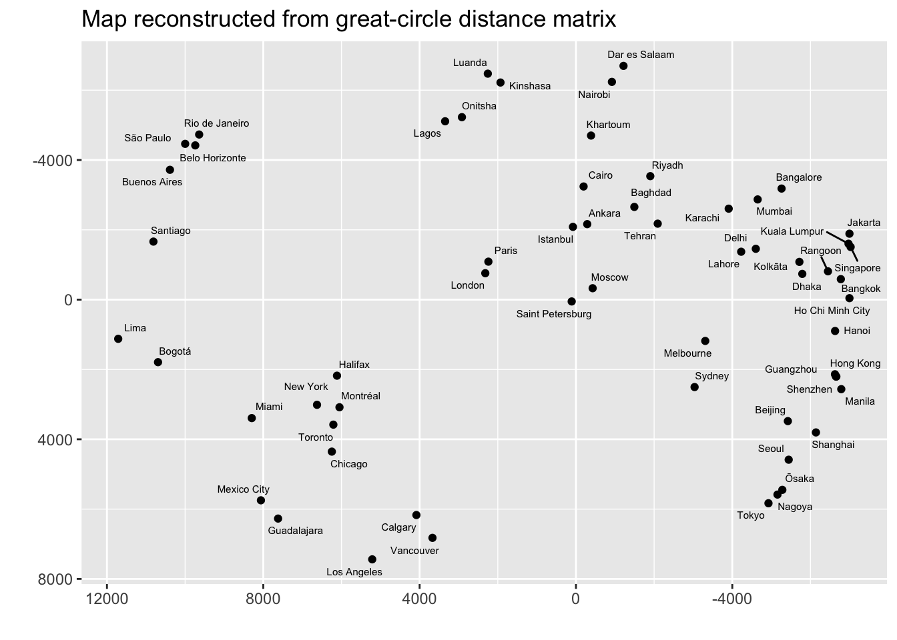

Multidimensional scaling (MDS) is another approach to ordination. The purpose is similar to the goals of PCA, but the methods are a bit different. With MDS, the starting point is a similarity, or distance matrix, providing measurements between all pairs of data. Many different functions can be used to compute this similarity matrix. Commonly distance functions are used. If quantitative data have very skewed distributions, or there is no good way to interpret the distance between points, the data may be converted to ranks (1, 2, 3, …) before the similarity measure is computed; then the method is called non-metric multidimensional scaling (NMDS) in recognition of the fact that the information being presented is not related to a distance.
22.0.1 Cities on a map
An easy to understand example of MDS starts with a matrix giving the distance between each pair of cities in a set. The MDS visualization then scatters these points across the plane, reconstructing the geographic separation of the points.
The dataset below is built from a database of world cities, selected to have only cities of more than 5 million plus some cities in Canada. I included a maximum of 4 cities per country so that one one region of the globe was too strongly concentrated in points. You can get the data from simplemaps and make your own subset.
cities<-read_csv("static/selected_cities.csv")
Rows: 61 Columns: 11
── Column specification ────────────────────────────────────────────────────────
Delimiter: ","
chr (7): city, city_ascii, country, iso2, iso3, admin_name, capital
dbl (4): lat, lng, population, id
ℹ Use `spec()` to retrieve the full column specification for this data.
ℹ Specify the column types or set `show_col_types = FALSE` to quiet this message.
Now we calculate the distance between all pairs of cities. I’ve shown two ways to do this – using great circle distance along the surface of the Earth, and using a distance that projects the surface of the Earth onto a plane first. If the goal is to reconstruct the map shown above, use this projected distance. If you would like instead to show great-circle distances between cities in the plane, use the geodesic distance.
city_distance<-dist(cities|>dplyr::select(lng, lat)|>as.matrix())# distance in equirectangular projection# https://en.wikipedia.org/wiki/Equirectangular_projection
Perform MDS (principal coordinates analysis). The direction of the two main axes could be reversed relative to the original map; I’ve reversed the x and y axes to match our customary view of the world.
mds1<-cmdscale(city_distance)colnames(mds1)<-c("V1", "V2")bind_cols(cities, as_tibble(mds1))|>ggplot(aes(x =V1, y =V2))+geom_point()+geom_text_repel(aes(label =city), size=2)+scale_x_reverse()+scale_y_reverse()+labs(title ="Map reconstructed from equirectangular distance matrix", x ="", y ="")

city_distance<-rdist.earth(cities|>dplyr::select(lng, lat)|>as.matrix(), miles =FALSE)# geodesic distancemds1<-cmdscale(city_distance)colnames(mds1)<-c("V1", "V2")bind_cols(cities, as_tibble(mds1))|>ggplot(aes(x =V1, y =V2))+geom_point()+geom_text_repel(aes(label =city), size=2)+scale_x_reverse()+scale_y_reverse()+labs(title ="Map reconstructed from great-circle distance matrix", x ="", y ="")

22.1 NMDS example
Morse code is a way of sending text messages using just two symbols: dot and dash, which was designed to be transmitted by a person clicking a key to make sounds and the receiver listening to the sounds and translating the message as it arrives.
The dataset below was created as part of an experiment to measure the rate at which patterns of sounds for one symbol were confused with sounds for a different symbol. The matrix is symmetric dissimilarity measure. Rows and columns vary across the 36 symbols tested (26 letters and 10 numeric digits). All diagonals are 0s. The off diagonal values are large if the sounds are not likely to be confuesed. Smaller dissimilarities correspond to symbols that are more likely to be confused. A small excerpt of the table is shown.
morse.dist<-read.delim('https://raw.githubusercontent.com/zdealveindy/anadat-r/master/data/morsecodes-dist.txt', row.names =1, head =T)names(morse.dist)<-rownames(morse.dist)morse.dist[1:5,1:5]|>kable()|>row_spec(0, monospace=TRUE)|>column_spec(1, monospace=TRUE)|>kable_styling(full_width =FALSE)
.-
-...
-.-.
-..
.
.-
0
167
169
159
180
-...
167
0
96
79
163
-.-.
169
96
0
141
166
-..
159
79
141
0
172
.
180
163
166
172
0
Use the function metaMDS from the package vegan to perform the NMDS ordination. The ordiplot function shows the objects from the dissimilarity matrix on a two-dimensional “ordination plot”. Points that are closer together are more likely to be confused (they are less dissimilar).
This next plot compares the distances in the original data to the distances as represented by the ordination. If the ordination represents the original data well, this will be close to a straight line. There is a point for every pairwise comparison. In this case there are 36 * 35 / 2 = 630 distances to compare. I have labeled some of the points with the largest distortion imposed by the ordination.
You can also access the points from the ordination and make the “ordiplot” using ggplot. The relative position of points on the plat is the only thing that matters – any rotation or translation of the plot contains the same information.
You might want to understand the NMDS analysis in terms of some properties of the Morse Code signals. This table has the length (1-5) and the ratio of short to long (dots and dashes) signals in each symbol. The envfit function then finds the direction each of these variables increases most rapidly across the ordination plane. The summary reports the direction and the correlation between these variables and the position on the ordination plot. The arrow for “length” follows the pattern in the ordination very well, while the arrow for the ratio of short to long only accounts for about half of the variation in the ordination plot.
# morse.attr <- read.delim('https://raw.githubusercontent.com/zdealveindy/anadat-r/master/data/morsecodes-attr.txt',# row.names = 1, head = T)# ef <- envfit(NMDS, morse.attr)# ef
The arrows show the direction of most rapid average increase of each variable.
# ordiplot(NMDS, cex = 1.5, type = 't')# plot(ef)
Here is a method to reproduce this plot using ggplot. First use str(ef) to examine the structure of the result from envfit. Then plot the points and arrows using ggplot.